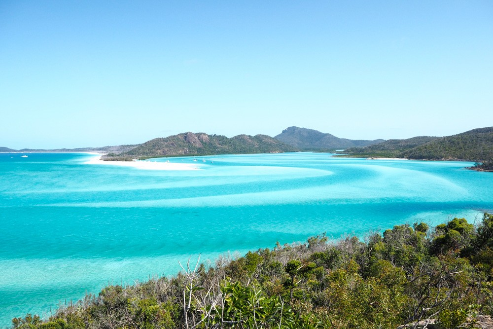
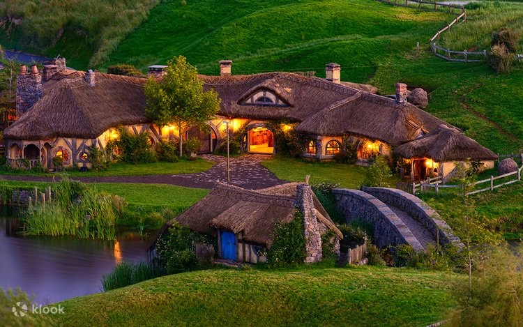
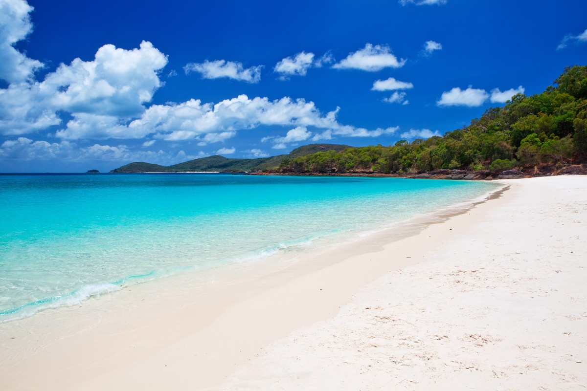

La Gran Barrera de Coral
Australia: La Gran Barrera de Coral, situada en la costa noreste de Australia, es uno de los tesoros naturales más
impresionantes del mundo. Este vasto ecosistema marino, que se extiende a lo largo de más de 2,300 kilómetros, es el hogar de una
increíble diversidad de vida marina y es considerado uno de los destinos de buceo y snorkel más espectaculares del planeta.

Hobbiton Movie Set
Nueva Zelanda: Un destino curioso para los amantes del cine. Puedes visitar las colinas verdes de "La Comarca"
y entrar en las pequeñas casas de los hobbits rodeadas de jardines reales. Hobbiton te da la posibilidad de sentirte como un hobbit
al menos por un día en un entorno verde y como si acabara de salir de un cuento. Para los que conocen las películas, tenéis que
saber que esta Comarca cuenta con todo tipo de detalles: desde la casa de Bilbo Bolsón, hasta el Campo de Fiesta donde se hacían
las celebraciones.

Playa de Whitehaven
Islas Whitsunday: WhiteHaven Beach se encuentra en la Isla de Hamilton, la cual esta integrada en un grupo de maravillosas
islas australianas llamadas White Sunday que juntas conforman un conglomerado de 77 islas. Se caracteriza por arenas muy blancas, pero además
esta playa es curiosa por otras razones. Para empezar, sus granos de arena son los más pequeños del mundo, hasta el punto de que al tacto
parece harina, y como están formados en un 98% de sílice, no retienen el calor, de forma que se puede caminar sobre la arena sin zapatillas
tranquilamente a cualquier hora del día sin la necesidad de quemarse las plantas del pie.